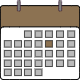

Magister’s Team Website
Table of Contents

Teaching Assistant Scheduling and Management System
Team Members
- Andrew Liddell - ajl496@nau.edu
- Joe Domabyl V - jwd98@nau.edu
- Daniel Drake - dcd97@nau.edu
- Junjian Yin - jy358@nau.edu
Project Sponsor
Dr. Viacheslav Fofanov - Associate director of the graduate program for SICCS at NAU
Email: Viacheslav.Fofanov@nau.edu
Technical Advisor
Volodymyr Saruta
Email: vvs28@nau.edu
Meet the Team!

Roles
- Joe Domabyl V
- Team Leader
- Release Manager
- Lead Architect
- Daniel Drake
- Editor
- Presentation Coordinator
- Andrew Liddell
- Website Developer
- Editor
- Meetings Recorder
- Junjian Yin
- Lead designer
- Client Relations Manager
What is this project for?
The responsibility of the associate director of the SICCS program is nothing short of massive. Scheduling classes and placing qualified TA’s in their respective classes is tedious and monotnous, but very consuming of what little time they have. As of now, they must manually assign TA’s in an excel spreadsheet. This is a terrible setup due to two circumstances:
- A TA requesting a schedule change
- A TA being terminated
When either of these circumstances occur, a butterfly effect of holes also open up, which means many people must be moved around to fill that hole. Doing this process manually with a spreadsheet is terrible, hence the heart of our problem. The goal is to develop a web application that can organize TA’s depending on their qualifications and automatically sort out any holes left if a TA makes a change or is terminated. As a stretch goal, we also want a system that allows TA’s to non-confrontationally ask if they could swap with other TA’s if they desire their spot.
Dr. Fofanov has a personal stake in this project, in that he wishes to quell the tedium of this task through a web application developed by us! If we can develop a great web application to handle this issue, we will try to expand our horizons to the rest of the department, or maybe even to other departments and universities. The impact of such could be huge.
The original document of what Fofanov had in mind can be found here:
Here is our promotional intro video for the product!
Development Requirements/Process
Requirements Overview
We have developed a series of requirements to solve this problem and design a high quality web application:
- A stable web hosting service with sizable RAM for our database needs.
- Redis databases that will keep track of all assigned alumni (including their info) for each semester.
- A django environment encapsulating all of the database information and rendering it to the end-user in the form of templated html pages.
- An efficient optimization algorithm that automatically organizes TA assignment depending on which moving decisions are made.
- A way to send our own links of admission so that the TA’s can create their own account on the system.
Data Management System
The application will be using a database package that will store three primary sets of data. The first will be referred to as the “semester pool”, the second as the “TA pool”, and the third as the “lab organizer pool”. Each lab organizer will be allocated a semester pool for each semester they are responsible for managing. All pools will be accessible by the GUI in order to provide a visual representation of the data for the lab organizers and TA’s. To better visualize the data management system, the team has provided Figure 2 below.
Web GUI
The application will feature a GUI that will allow users to visualize TA scheduling as well as employ a set of buttons that provide a series of different functions. Both user account-types will be presented with a different version of the GUI upon login. Each user will be shown pages based on the work they are trying to accomplish. Below is a rouch sketch of what the GUI should look like.
Diagram of the Lab Coordinator Interface
Diagram of the TA Interface
User-Based Authentication and Permissions
Users of the application will first be authenticated by the system and subsequently given different permissions based on their account status. The importance of strict roles and permissions are to ensure security, confidentiality, and to ensure the equal satisfaction of all TA’s that are scheduled. The application will complete most of the scheduling work for the lab organizer while also allowing the organizer to make any changes necessary to fit the current context. The TA’s will not have any direct permissions in terms of schedule changes, but will be allowed to see the entire schedule.
Optimization Algorithm
The application will provide a way of organizing and placing TA’s into their qualified positions. In the backend of the system will be an optimization algorithm that will contextually decide which TA gets assigned to which lab. This algorithm will contain a generalized formula for scheduling TA’s using a number-based scoring system. All TA’s hired for a specific semester will be evaluated through each semester and assigned a score based on their skill qualification. The TA with the highest score for a certain lab will be assigned to that lab.
Account Configuration and Setup
There will be two primary aspects of account configuration and setup. First, the lab organizer will be able to create an account for themselves to be able to moderate their labs. Second, each TA will be able to access the application in order to provide their personal data, allowing them to be scheduled within the system.
Development Process Overview
The team standards for our development process can be found here:
./CS476-MagistersTeamStandards.pdf
As of now, the team has completed its tech feasibility documents and requirements documents. They can be viewed with the followig links:
./CS476-MagistersTechFeasibilityFinal.pdf
./CS476-RequirementsSpecificationFinal.pdf
As of most recent, we have completed out design review presentation. The slides for which can be viewed here:
Technologies
Django
Django is a highly scalable web framework that will allow us to make great looking and dynamic web pages that allow the user to quickly navagate and use the appropriate tools for the website. The main focus of using this framework is to develop a template of html pages and use the built-in sys admin component for the use of Fofanov.
Redis
Redis is a key-value database (rather than a relational one) that resides within the computer’s memory rather than in-disk. This will allow for lightnight fast response times to accomodate for some sluggishness on Django’s side.
Django-redis library
This package allows for the backend part of the django framework to hook up with the redis database. This is one of the other reasons why we chose Django was because of its nice integration into several different types of databases.
General text editors
For the most part, we do not plan to use many IDE’s for the design of this project. Editors like vim, emacs, etc. will be own main tools for development.
Pycharm community edition
In order to easily work with our django environment, we will use a django component in the IDE pycharm to start most of our development processes. Django development is already extremely speedy, but pycharm will take it a step further.
AWS
We will be using this web hosting service for our entire application. The servers will be trustworthy and efficient, and the budget will be very low considering the smaller scale of this project.
Github
Our code repository of choice will be github. Since many of the team members have plenty of experience with it, we will use it for our version control for the project.
Envisioned Solution
 This application will allow a sys admin to place the TA’s in a table initially, but the initial placement can be done depending on how they recorded their proficiencies on the google form. Faculty will have read only privileges and will be able to make requests for changes in the database. This must be modifiable enough so that restraints when making changes to the database can be modified. If there is a schedule conflict for one of the TA’s there will be a large pentalty from being assigned to said course, as the optimiser will be less likely to assign the student.
This application will allow a sys admin to place the TA’s in a table initially, but the initial placement can be done depending on how they recorded their proficiencies on the google form. Faculty will have read only privileges and will be able to make requests for changes in the database. This must be modifiable enough so that restraints when making changes to the database can be modified. If there is a schedule conflict for one of the TA’s there will be a large pentalty from being assigned to said course, as the optimiser will be less likely to assign the student.
The lab organizer will be given a completely different view than a TA or GTA accessing the website. The lab organizer will be able to make schedule changes, see possible schedules, and view the history of changes made by them. The envisioned solution we have is all parts in terms of TA and evaluation will be automated, while the lab organizer can make as many ammendments as they want. The process for changing any fields, weights or constraints should be simple and easy.
The TA and GTA will only be allowed to see the schedule and where they are assigned. As a stretch goal, they will be allowed to request a sawp with another TA with the lab organizer’s approval.
Our presentation with the proposed solution can be found here: ./CS476-MagistersMiniIntro.pdf
The current design for our web application (everything included):
Our Schedule and Resources
We are extremely early in the development process, so currently we are researching our options to build this application the best way possible. We will soon upload our technological feasibility document to show the current process.
| [week] | Sunday | Monday | Tuesday | Wedensday | Thursday | Friday | Saturday |
|---|---|---|---|---|---|---|---|
| 8/23 | |||||||
| 8/30 | |||||||
| 9/6 | |||||||
| 9/13 | |||||||
| 9/20 | |||||||
| 9/27 | Team Standards and Inventory Due | ||||||
| 10/4 | Begin individual research on feasible technologies | ||||||
| 10/11 | Inegrate research to our Tech feasibility document | Meet with Dr. Fofanov to discuss tech | |||||
| 10/18 | Begin prototyping our solution with django environment and redis database | Complete Tech feasibility document | |||||
| Integrate planning for implementing our application in reqirements doc | |||||||
| 10/25 | |||||||
| 11/1 | |||||||
| 11/8 | |||||||
| 11/15 | Present Design Review Number 1 | ||||||
| 11/22 | Finish sketch for web GUI | ||||||
| 11/29 | Finish Redis Database and Django integration | Sign requirements contract with Dr. Fofanov | |||||
| 12/6 | Finish optimization algorithm prototype |
Codebase
Here is the current github repo for our Django environment. As we continue to flesh out our prototypes, more code will be available in source. https://github.com/joedomabylv/taschman